This getting started guide aims to empower individuals without a programming background to engage in code-based plotting with tidyplots. We will start by covering essential software tools and discussing data preparation. Next, we will introduce the tidyplots workflow, which includes adding, removing, and adjusting plot components. Finally, we will showcase the application of themes and multiplot layouts.
Prerequisites
You never generated code-based scientific plots? Great to have you here! To get you started, we will install a couple of software tools to setup your new working environment.
Install R and RStudio Desktop
We will be using the programming language R and the software RStudio Desktop, which serves as an editor for your code but also comes with a bunch of additional features.
- Download and install R for your operating system. On Windows, choose the base version.
- Download and install RStudio Desktop
For more information about R programming have a look at the free online book Hands-On Programming with R by Garrett Grolemund, which has a chapter with detailed installation instructions. For a quick video tour of the RStudio Desktop user interface check out RStudio for the Total Beginner.
Install packages
After opening RStudio, you will find your R console in the lower left corner. All code you enter in the console will be directly executed by R. Let’s start by installing some essential packages. Packages deliver additional functionality that is not built into base R.
install.packages("tidyverse")
install.packages("tidyplots")Data preparation
Before starting to plot, the first thing is to ensure that your data is tidy. More formally, in tidy data
- each variable must have its own column
- each observation must have its own row and
- each value must have its own cell
For more details about tidy data analysis have a look at the free online book R for Data Science by Hadley Wickham, which has a chapter dedicated to tidy data.
tidyplots comes with a number of tidy demo dataset that are ready to
use for plotting. We start by loading the tidyplots package and have a
look at the study dataset.
library(tidyplots)
study
#> treatment group dose participant age sex score
#> 1 A placebo high p01 23 female 2
#> 2 A placebo high p02 45 male 4
#> 3 A placebo high p03 32 female 5
#> 4 A placebo high p04 37 male 4
#> 5 A placebo high p05 24 female 6
#> 6 B placebo low p06 23 female 9
#> 7 B placebo low p07 45 male 8
#> 8 B placebo low p08 32 female 12
#> 9 B placebo low p09 37 male 15
#> 10 B placebo low p10 24 female 16
#> 11 C treatment high p01 23 female 32
#> 12 C treatment high p02 45 male 35
#> 13 C treatment high p03 32 female 24
#> 14 C treatment high p04 37 male 45
#> 15 C treatment high p05 24 female 56
#> 16 D treatment low p06 23 female 23
#> 17 D treatment low p07 45 male 25
#> 18 D treatment low p08 32 female 21
#> 19 D treatment low p09 37 male 22
#> 20 D treatment low p10 24 female 23As you can see, the study dataset consists of a table
with 7 columns, also called variables, and 20 rows, also called
observations. The study participants received 4 different kinds
of treatment (A, B, C, or D) and a score was
measured to assess treatment success.
Plotting
Now it is time for the fun part! Make sure that you loaded the tidyplots package. This needs to be done once for every R session.
Then we start with the study dataset and pipe it into
the tidyplot() function.
study |>
tidyplot(x = treatment, y = score)And here it is, your first tidyplot! Admittedly, it still looks a little bit empty. We will take care of this in a second. But first let’s have a closer look at the code above.
In the first line we start with the study dataset. The
|> is called a pipe and makes sure, that the
output of the first line is handed over as input to the next line. In
the second line, we generate the tidyplot and specify which variables we
want to use for the x and y-axis using the x and
y arguments of the tidyplot() function.
Tip: The keyboard shortcut for the pipe is Cmd +
Shift + M on the Mac and Ctrl +
Shift + M on Windows.
Add
Next, let’s add some more elements to the plot. This is done by using
a family of functions that all start with add_. For
example, we can add the data points by adding one more line to the code.
Note, that we need a |> at the end of each line, where
the output should be piped into the next line. When you combine multiple
lines like this, you have generated a pipeline.
study |>
tidyplot(x = treatment, y = score) |>
add_data_points()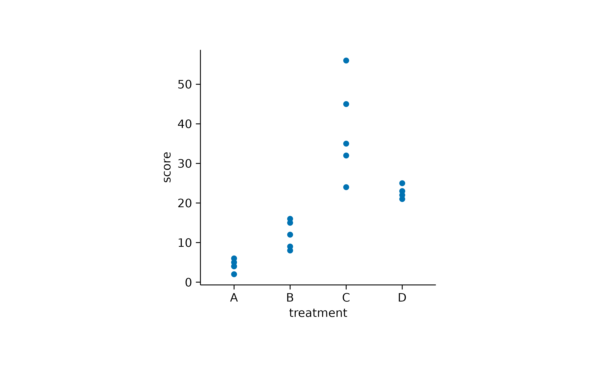
Of course, you do not have to stop here. There are many
add_*() functions you can choose from. An overview of all
function in the tidyplots package can be found in the Package
index.
For now, let’s add some bars to the plot. As soon as you start typing
“add” in RStudio you should see a little window next to your courser
that shows all available function that start with “add” and can thus be
used to build up your plot. You can also manually trigger the
auto-completion window by hitting the tab key.
In tidyplots, function names that start with add_
usually continue with the statistical entity to plot,
e.g. mean, median, count, etc. As
a next piece, you decide which graphical representation to use,
e.g. bar, dash, line etc. In our
example we choose add_mean_bar() to show the mean value of
each treatment group represented as a bar.
study |>
tidyplot(x = treatment, y = score) |>
add_data_points() |>
add_mean_bar(alpha = 0.4)
One thing to note here is that I added alpha = 0.4 as a
argument to the add_mean_bar() function. This adds a little
transparency to the bars and results in a lighter blue color in
comparison to the data points.
Some people might do not like bars so much. So let’s exchange the
bar for a dash. And while we are on it, let’s
add the standard error of the mean sem, represented as
error bar.
study |>
tidyplot(x = treatment, y = score) |>
add_data_points() |>
add_mean_dash() |>
add_sem_errorbar()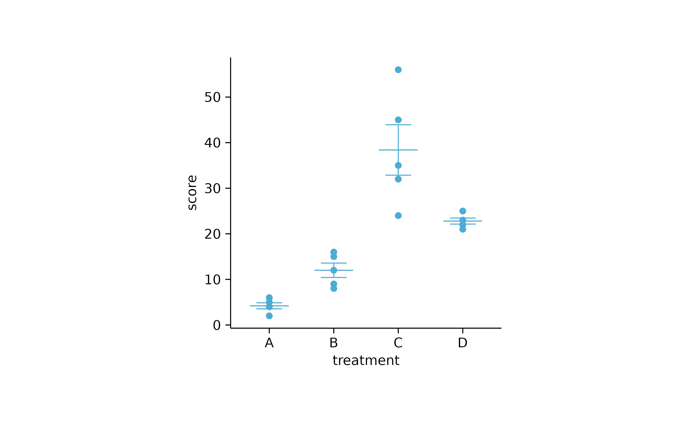
I think by now you got the principle. You can just keep adding layers until your plot has all the elements you need.
But there is one more building block that we need to cover and that
is color. Color is a very powerful way to encode information in a plot.
As colors can encode variables in a similar way as axes, the
argument color needs to be to provided in the initial call
of the tidyplot() function.
study |>
tidyplot(x = group, y = score, color = dose) |>
add_data_points() |>
add_mean_dash() |>
add_sem_errorbar()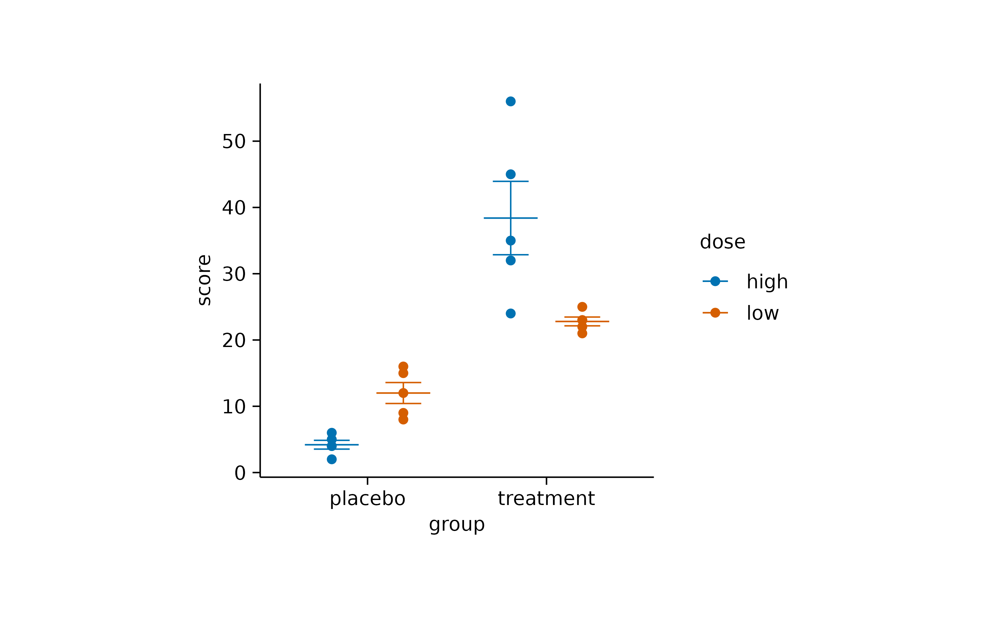
As you can see, color acts as a way to group the data by
a third variable, thus complementing the x and
y axis.
Although there are many more add_*() functions
available, I will stop here and leave you with the Package
index and the article about Visualizing
data for further inspiration.
Remove
Besides adding plot elements, you might want to remove certain parts
of the plot. This can be achieved with the remove_*()
family of functions. For example, you might want to remove the color
legend title, or in some rare cases even the entire y-axis.
study |>
tidyplot(x = group, y = score, color = dose) |>
add_data_points() |>
add_mean_dash() |>
add_sem_errorbar() |>
remove_legend_title() |>
remove_y_axis()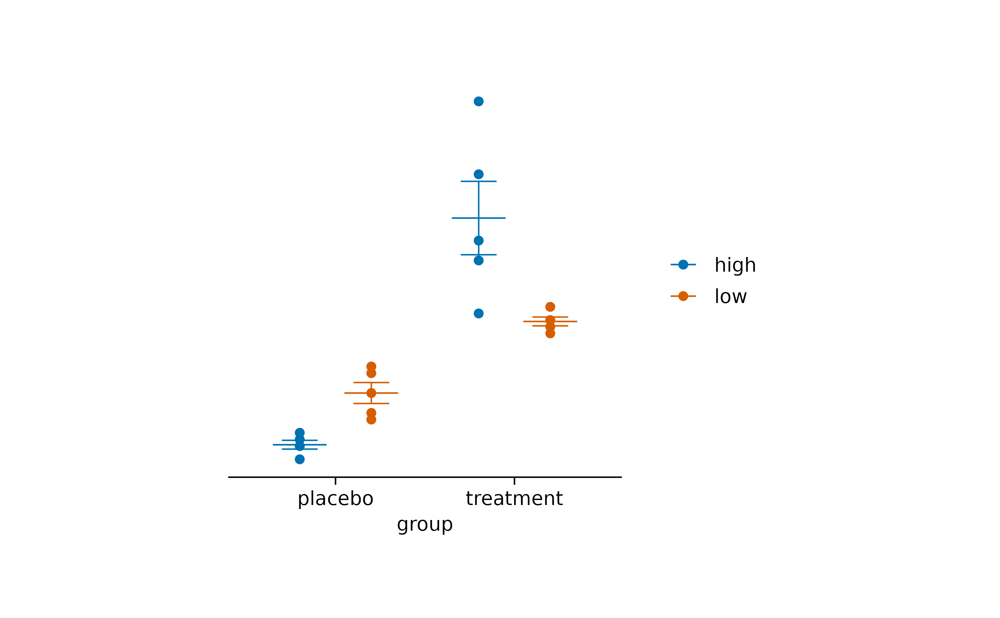
More remove_*() functions can be found in the Package
index.
Adjust
After you have assembled your plot, you often want to tweak some
details about how the plot or its components are displayed. For this
task, tidyplots provides a number of adjust_*()
functions.
Let’s start with this plot.
study |>
tidyplot(x = treatment, y = score, color = treatment) |>
add_data_points() |>
add_mean_bar(alpha = 0.4) |>
add_sem_errorbar()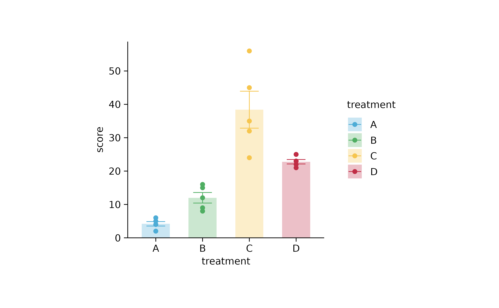
When preparing figures for a paper, you might want ensure, that all plots have a consistent size. The default in tidyplots is a width of 50 mm and a height of 50 mm. Please note that these values refer to size of the plot area, which is the area enclosed by the x and y-axis. Therefore labels, titles, and legends are not counting towards the plot area size.
This is perfect to achieve a consistent look, which is most easily
done by selecting a consistent height across plots, while
the width can vary depending on the number of categories in
the x-axis.
study |>
tidyplot(x = treatment, y = score, color = treatment) |>
add_data_points_beeswarm(shape = 1) |>
add_mean_bar(alpha = 0.4) |>
add_sem_errorbar() |>
adjust_size(width = 20, height = 20)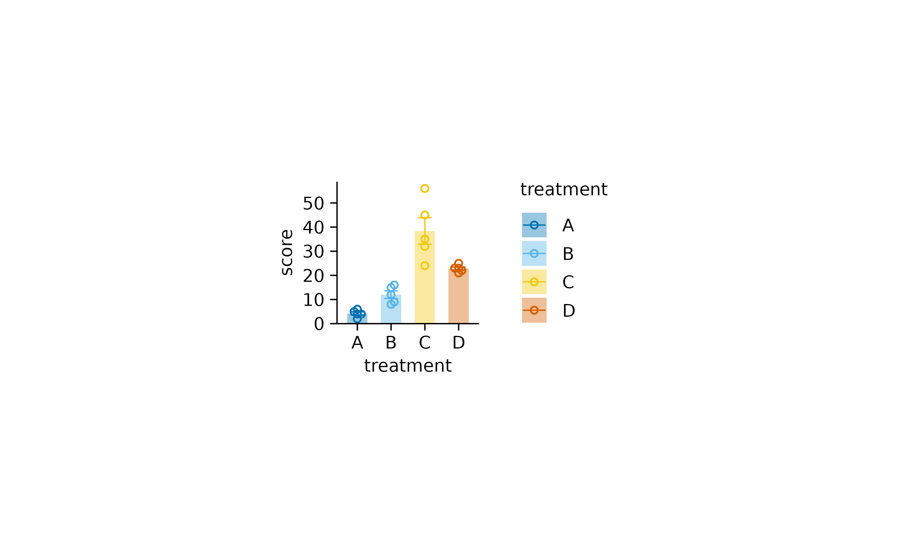
Another common adjustment is to change the titles of the plot, axes,
or legend. For this we will use the function adjust_title()
and friends.
study |>
tidyplot(x = treatment, y = score, color = treatment) |>
add_data_points() |>
add_mean_bar(alpha = 0.4) |>
add_sem_errorbar() |>
adjust_title("This is my fantastic plot title") |>
adjust_x_axis_title("Treatment group") |>
adjust_y_axis_title("Disease score") |>
adjust_legend_title("") |>
adjust_caption("Here goes the caption")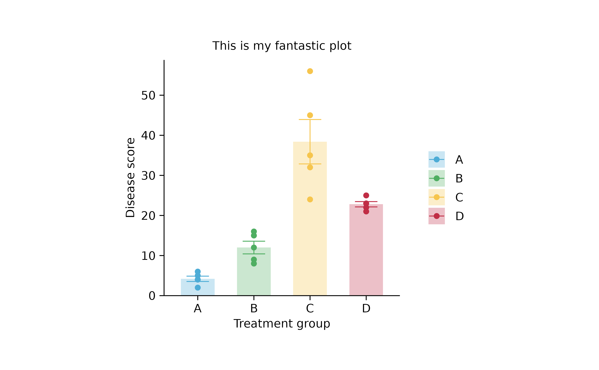
Note that I removed the legend title by setting it to an empty string
adjust_legend_title(""). This is alternative to
remove_legend_title(), however the result is not exactly
the same. I am sure you will figure out the difference.
Another common task is to adjust the colors in your plot. You can do
this using the adjust_colors() function.
study |>
tidyplot(x = treatment, y = score, color = treatment) |>
add_data_points() |>
add_mean_bar(alpha = 0.4) |>
add_sem_errorbar() |>
adjust_colors(new_colors = c("#644296","#F08533","#3B78B0", "#D1352C"))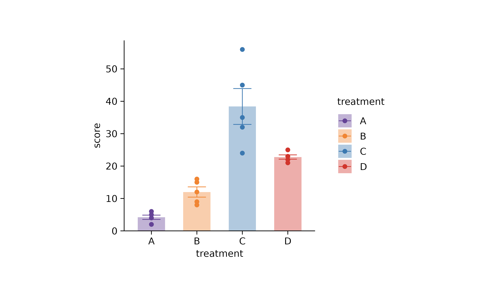
You can also use the color schemes, that are built into tidyplots. To learn more about these color schemes have a look at the article Color schemes.
study |>
tidyplot(x = treatment, y = score, color = treatment) |>
add_data_points() |>
add_mean_bar(alpha = 0.4) |>
add_sem_errorbar() |>
adjust_colors(new_colors = colors_discrete_seaside)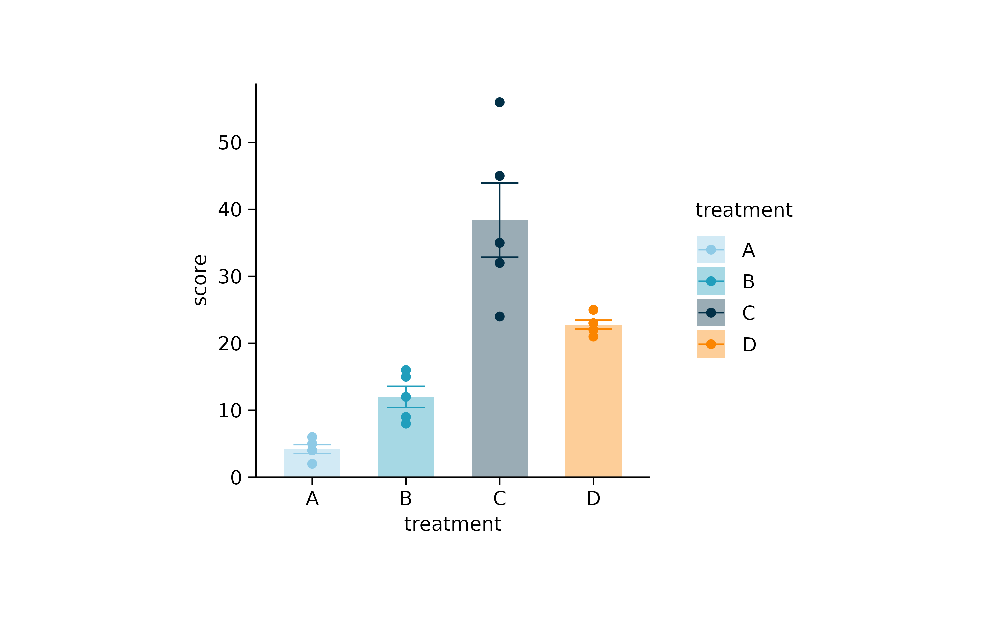
Rename, reorder, sort, and reverse
A special group of adjust functions deals with the data
labels in your plot. These function are special because they need
to modify the underlying data of the plot. Moreover, they do not start
with adjust_ but with rename_,
reorder_, sort_, and
reverse_.
For example, to rename the data labels for the treatment
variable on the x-axis, you can do this.
study |>
tidyplot(x = treatment, y = score, color = treatment) |>
add_data_points() |>
add_mean_bar(alpha = 0.4) |>
add_sem_errorbar() |>
rename_x_axis_labels(new_names = c("A" = "This",
"B" = "is",
"C" = "totally",
"D" = "new"))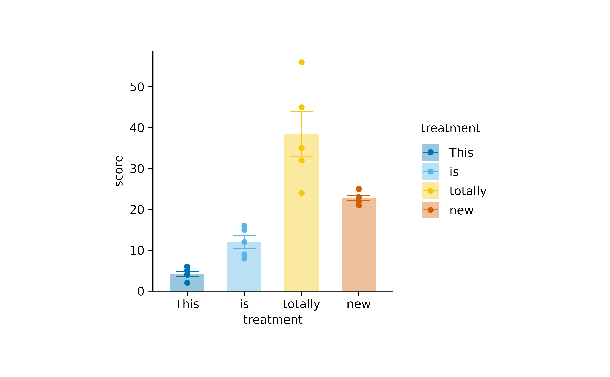
Note that we provide a named character vector to make it clear which old label should be replace with which new label.
The remaining functions, starting with reorder_,
sort_, and reverse_, do not change the name of
the label but their order in the plot.
For example, you can bring the treatment “D” and “C” to the front.
study |>
tidyplot(x = treatment, y = score, color = treatment) |>
add_data_points() |>
add_mean_bar(alpha = 0.4) |>
add_sem_errorbar() |>
reorder_x_axis_labels("D", "C")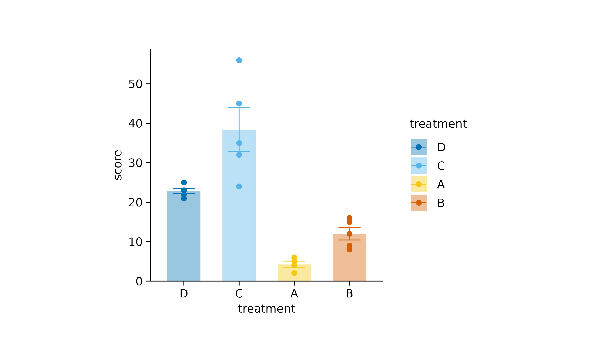
Sort the treatments by their score.
study |>
tidyplot(x = treatment, y = score, color = treatment) |>
add_data_points() |>
add_mean_bar(alpha = 0.4) |>
add_sem_errorbar() |>
sort_x_axis_labels()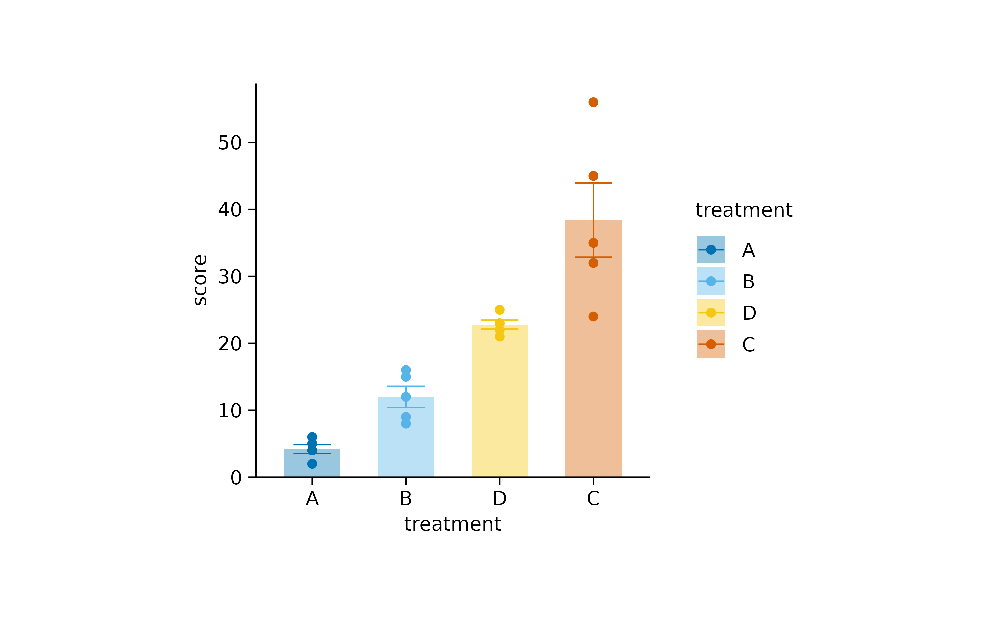
Or simply reverse the order of the labels.
study |>
tidyplot(x = treatment, y = score, color = treatment) |>
add_data_points() |>
add_mean_bar(alpha = 0.4) |>
add_sem_errorbar() |>
reverse_x_axis_labels()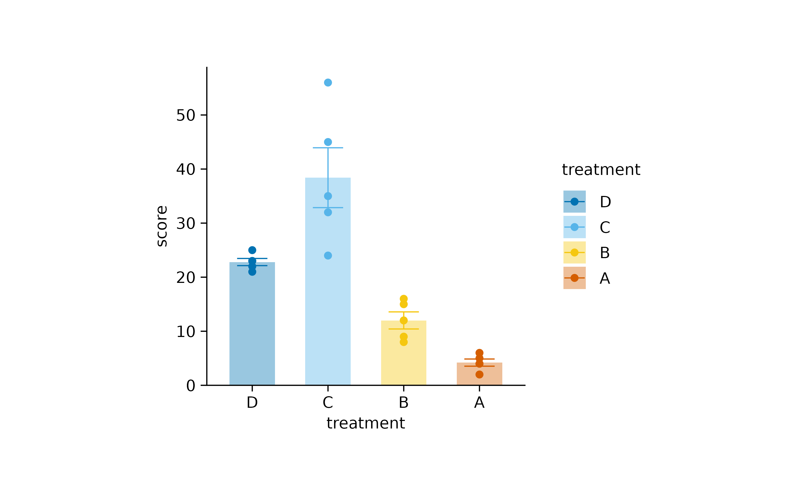
Of course, there are many more adjust_ functions that
you can find in the Package
index.
Themes
Themes are a great way to modify the look an feel of your plot without changing the representation of the data. You can stay with the default tidyplots theme.
study |>
tidyplot(x = treatment, y = score, color = treatment) |>
add_data_points() |>
add_sem_errorbar() |>
add_mean_dash() |>
theme_tidyplot()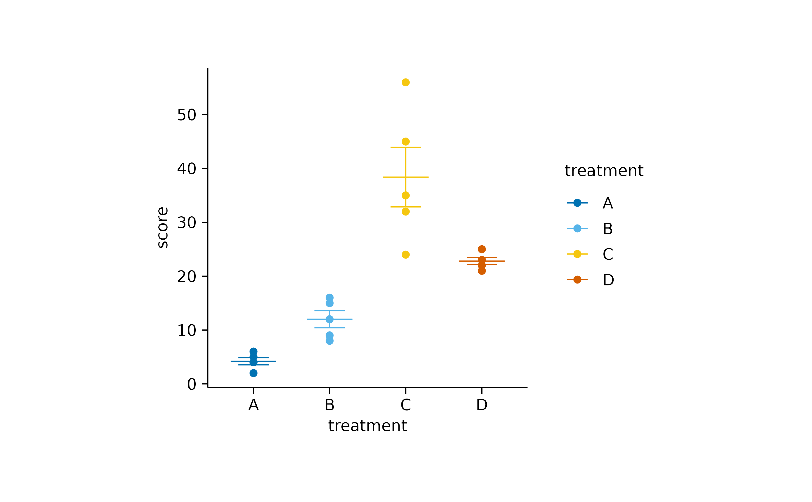
Or try something more like ggplot2.
study |>
tidyplot(x = treatment, y = score, color = treatment) |>
add_data_points() |>
add_sem_errorbar() |>
add_mean_dash() |>
theme_ggplot2()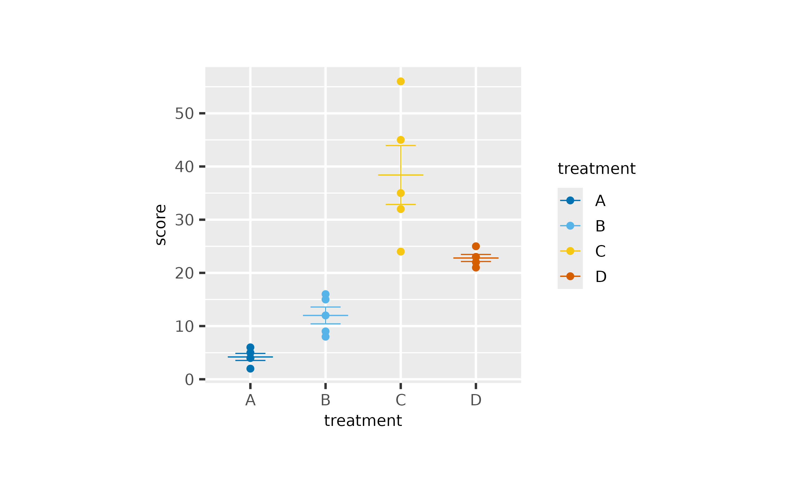
Or something more minimal.
study |>
tidyplot(x = treatment, y = score, color = treatment) |>
add_data_points() |>
add_sem_errorbar() |>
add_mean_dash() |>
theme_minimal_y() |>
remove_x_axis_line()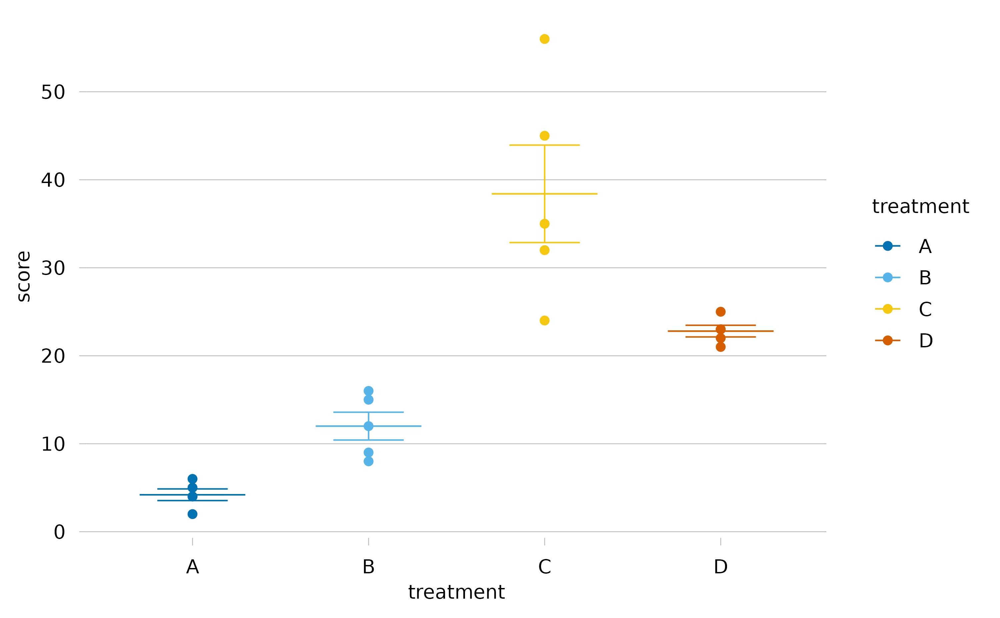
Split
When you have a complex dataset, you might want split the plot into
multiple subplots. In tidyplots, this can be done with the function
split_plot().
Starting with the study dataset, you could plot the
score against the treatment group and split
this plot by dose into a high dose and a low dose plot.
study |>
tidyplot(x = group, y = score, color = group) |>
add_data_points() |>
add_sem_errorbar() |>
add_mean_dash() |>
adjust_size(width = 30, height = 25) |>
split_plot(by = dose)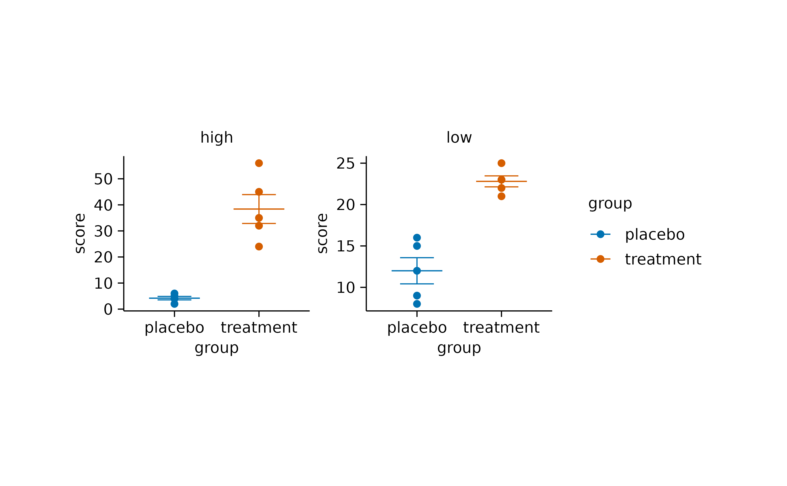
Output
The classical way to output a plot is to write it to a PDF or PNG
file. This can be easily done by piping the plot into the function
save_plot().
study |>
tidyplot(x = group, y = score, color = group) |>
add_data_points() |>
add_sem_errorbar() |>
add_mean_dash() |>
save_plot("my_plot.pdf")Conveniently, save_plot() also gives back the plot it
received, allowing it to be used in the middle of a pipeline. If
save_plot() is a the end of pipeline, the plot will be
rendered on screen, providing a visual confirmation of what was saved to
file.
What’s more?
To dive deeper into code-based plotting, here a couple of resources.
tidyplots documentation
Package index
Overview of all tidyplots functionsGet started
Getting started guideVisualizing data
Article with examples for common data visualizationsAdvanced plotting
Article about advanced plotting techniques and workflowsColor schemes
Article about the use of color schemes
Other resources
Hands-On Programming with R
Free online book by Garrett GrolemundR for Data Science
Free online book by Hadley WickhamFundamentals of Data Visualization
Free online book by Claus O. Wilke